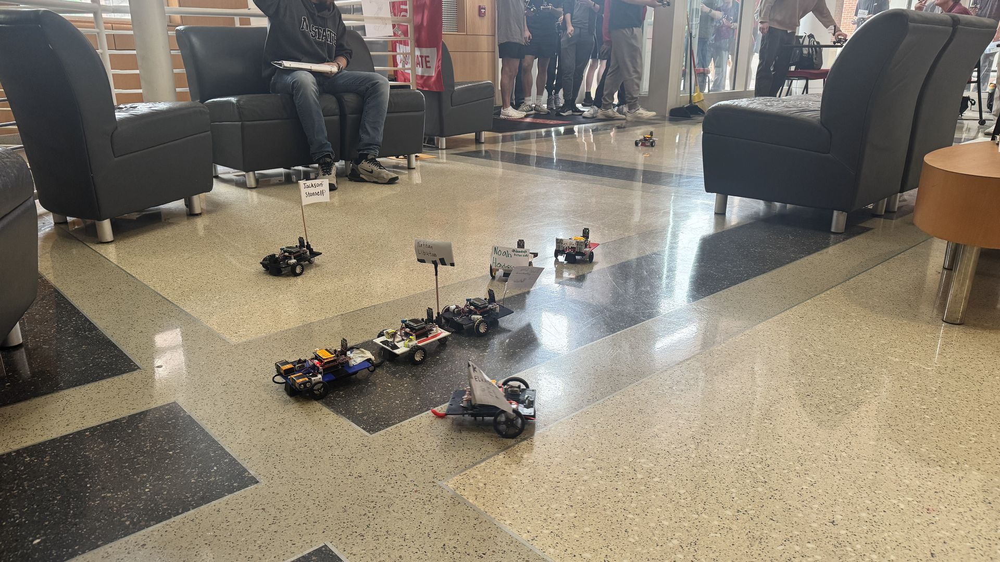
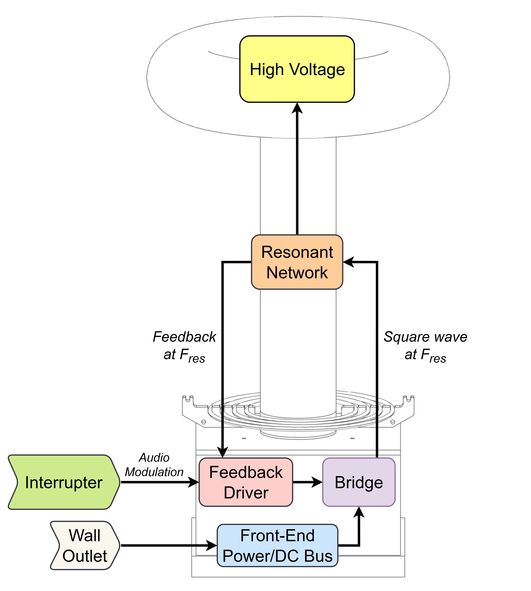
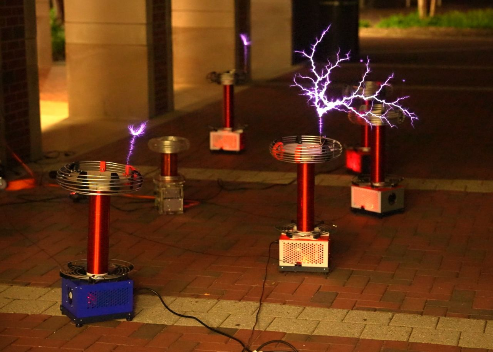
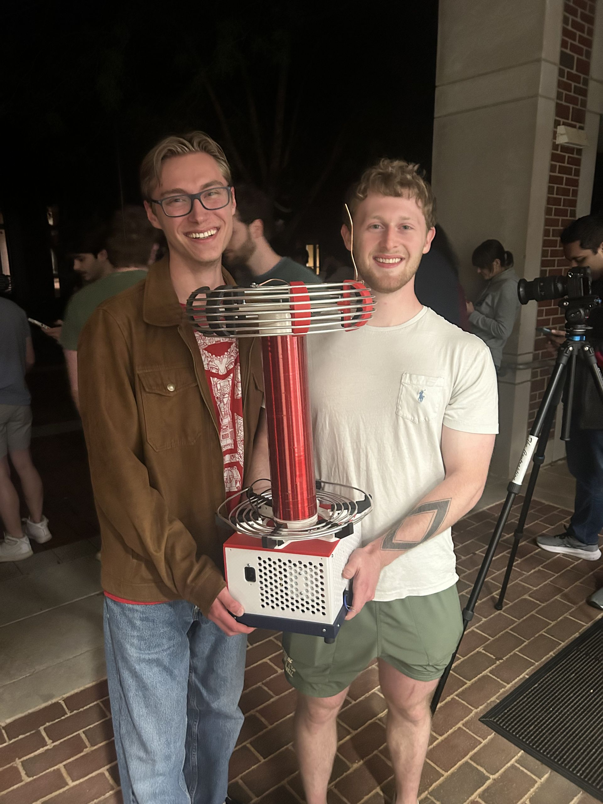

School Projects
ECE 306 — Microcontroller/IOT Autonomous Car
This was the term project for our embedded systems class. We used TI's MSP430FR2355 LaunchPad kit as a base FRAM microcontroller platform, slowly building things up week to week. Coding was done in C, and over the course of the semester, we ended up adding several boards that housed an LCD screen, a thumbwheel, an IR emitter and detectors, motors, and an ESP32 module. Projects evolved in complexity and ultimately culminated in IOT control of our car over Wi-Fi and a black-line-following algorithm. These were the two sections that comprised the Demo Day at the end of the semester.
Line following utilized the IR emitter LED with the two IR detector LEDs to the left and right. We used ADC to read these detectors as inputs, giving us a way to measure our car's position over black electrical tape on a white board. I then built a "bang-bang" controller to determine when the car was on/off or partially on the black line, adjusting accordingly. Given more time, I'd like to implement a more robust PID controller. Overall this was the most enjoyable part of the project for me, and I cannot emphasize enough how much I loved spending countless hours in the lab dialing things in.
Serial communication was difficult for me to grasp at first, but after finally getting the ESP32 set up and my car connected to Wi-Fi, I have to admit, it's pretty sick. Someone in years prior made an IOS app that let us easily connect to our cars using just the IP address and a port number. This is how we sent commands to our car. My commands were structured like $$F0200, with $$ being the passkey to signify a command, F being an ID to indicate "Forward", and 200 to signify that the command should last 200x 10ms ticks, or 2 seconds. It was honestly a lot of fun to set up the giant state machine needed to parse and execute every command I had configured.
For Demo Day, we started with the IOT Course. In this phase, everyone in class drove around to various numbered pads littered across the floor using the IOT app as a controller. At each pad, we had to display a message noting we arrived. For me, having a command to change my car speed from slow to fast was crucial. The next phase involved using a single command to leave the infamous Pad 8, intercept the white board and black line course, navigate around the circle portion a given number of times, and then exit with a single command. At various points for each step, we were to stop and display messages for 10-20s. The patchy tile gave similar IR readings to the black line, so not initiating my "line intercept" sequence too early was key. I ultimately had to build "white pad detection" logic to make sure it didn't.
This project and this course were such valuable learning experiences for me, and I'm so incredibly thankful that I made the decision to step outside of my comfort zone and take it as an EE major.

ECE 526 — MIDI Tesla Coil
This is the tesla coil we built for my analog electronics lab. It's a Dual Resonant Solid State Tesla Coil (DRSSTC) and is essentially made up of the Interrupter, Driver, and Power Bridge boards.
The Interrupter acts as an "enable" in the form of a square wave to signify when the coil can produce a spark. This is also what allows us to create music.
If each enable is a spark, then 100 enables per second gives a 100Hz frequency of sound.
By varying the Interrupter's input either via PWM or MIDI, we can create sparks at various audible frequencies.
The Driver exists in a kind of feedback loop. It powers the Bridge and at the same time receives feedback from the output of the Bridge at its resonant frequency.
The goal is to match that frequency in order to create a super fast ramp up in voltage for a given spark. The analogy our TA, Zander, used was that of pushing someone on a swing.
To push the swing higher, you have to time your pushes to match the frequency of the swings.
If you try and push while the swing is falling towards you, you'll hurt yourself and kill the momentum of the swing. If you push with the swing as it falls away from you, you'll add to its momentum, pushing it higher.
This is what the feedback of the Driver lets us do.
I'm so glad I was able to be apart of this class for its maiden offering. I feel like I gained a ton of hands-on experience with not only soldering but more importantly, bench-top testing. That was my biggest takeaway: just how much testing and troubleshooting is needed for building a project like this. As painstaking as it is, the dopamine hit from finally finding a shoddy solder joint or blown IC makes it all worth it.
Finally, we ended the semester with a class concert, stringing together six coils at a time. Our coil got a solid 30 minutes of playtime in before kicking the bucket.. Was a sick sendoff to Free Bird, though.
This class and the coil itself were created and administered by Zander Selleseth and Alex Kowalewski. All props and credit to them.



ECE 212 — LED State Machine Circuit
For our final project, we were tasked with designing and building two independent state machines controlling
sequences of LEDs.
These state machines would be powered by a 555 timer, with an individual input to switch between the two. I decided to
make a 3-state 'X' pattern
and a 4-state 'O' pattern. Here is a link to my truth tables and circuit layouts.